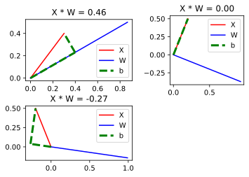
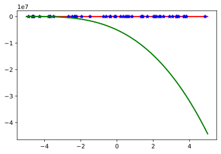
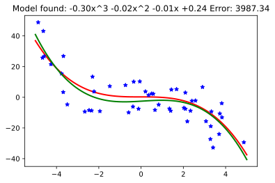

Linear Regression
Jacky Baltes
National Taiwan Normal University
Taipei, Taiwan
jacky.baltes@ntnu.edu.tw

Linear Model
Assume that we are trying to model a linear relationship between some input
variables
The problem of predicting a numerical value (Y) is called a regression. Since we use a linear model, this is called a linear regression problem
The output variable
Dealing with the constant is not so nice, since it is a special case. Easier is to add a constant feature \( X_0 = 1\) for all features
If we interpret features \( X \) and weights \( w \) as vectors, then we can simplify the representation as the dot product of the two vectors
\[ Y = \vec{w} \cdot \vec{X} \]
Weights, Features, and the Dot Product
The dot product has a geometric interpretation
The dot product \( \vec{A} \cdot \vec{B} \) is the length of the projection of vector \( \vec{A} \) onto vector \( \vec{B} \) of unit length
fig = plt.figure()
ax1 = fig.add_subplot( 2, 2, 1 )
ax1.set_aspect("equal")
a = np.array( [0.3, 0.4] )
b_theta = 30.0/180.0 * math.pi
b = np.array( [ math.cos(b_theta), math.sin(b_theta)] )
p_d = a.dot(b)
p = np.array( [ math.cos(b_theta) * p_d, math.sin(b_theta)*p_d] )
ax1.plot( [ 0, a[0] ], [0, a[1]], 'r-', label="X")
ax1.plot( [ 0, b[0] ], [0, b[1]], 'b-', label="W")
ax1.set_title( f"X * W = {p_d:.2f}" )
ax1.plot( [ 0, p[0] ], [0, p[1]], 'g--', label="b", linewidth=3)
ax1.plot( [p[0], a[0]], [p[1], a[1]], 'g--', linewidth=3)
ax1.legend()
ax2 = fig.add_subplot( 2, 2, 2 )
ax2.set_aspect("equal")
a = np.array( [0.2, 0.5] )
b_theta = math.atan2( a[1], a[0] ) - 90.0/180.0 * math.pi
b = np.array( [ math.cos(b_theta), math.sin(b_theta)] )
p_d = a.dot(b)
p = np.array( [ math.cos(b_theta) * p_d, math.sin(b_theta)*p_d] )
ax2.plot( [ 0, a[0] ], [0, a[1]], 'r-', label="X")
ax2.plot( [ 0, b[0] ], [0, b[1]], 'b-', label="W")
ax2.set_title( f"X * W = {p_d:.2f}" )
ax2.plot( [ 0, p[0] ], [0, p[1]], 'g--', label="b", linewidth=3)
ax2.plot( [p[0], a[0]], [p[1], a[1]], 'g--', linewidth=3)
ax2.legend()
ax3 = fig.add_subplot( 2, 2, 3 )
ax3.set_aspect("equal")
a = np.array( [-0.2, 0.5] )
b_theta = math.atan2( a[1], a[0] ) - 120.0/180.0 * math.pi
b = np.array( [ math.cos(b_theta), math.sin(b_theta)] )
p_d = a.dot(b)
p = np.array( [ math.cos(b_theta) * p_d, math.sin(b_theta)*p_d] )
ax3.plot( [ 0, a[0] ], [0, a[1]], 'r-', label="X")
ax3.plot( [ 0, b[0] ], [0, b[1]], 'b-', label="W")
ax3.set_title( f"X * W = {p_d:.2f}" )
ax3.plot( [ 0, p[0] ], [0, p[1]], 'g--', label="b", linewidth=3)
ax3.plot( [p[0], a[0]], [p[1], a[1]], 'g--', linewidth=3)
ax3.legend()
dp1 = addJBFigure("dp1", 0, 0, fig )
plt.close()
Geometric Interpretation of the Dot Product

Geometric Interpretation of the Dot Product
Using a geometric interpretation, the goal is to find a weight vector such that the projection of the inputs \( X \) will match the training data \( Y \)
Training process should for each training instance \( X_i \):
- If \( w \cdot X_i = Y_i \), then we do not change \( w \)
- If \( w \cdot X_i < Y_i \), then we want to make the angle between \( X \) and \( w \) smaller
- If \( w \cdot X_i > Y_i \), then we want to make the angle between \( X \) and \( w \) bigger
Geometric Interpretation of the Dot Product
random.seed(20191202)
np.random.seed(20191202)
def createSampleData( NModel, Pmin, Pmax, NInstances, sigma ):
model = -0.5 + np.random.random(NModel)
x = Pmin + np.random.random( (NInstances) ) * (Pmax - Pmin)
x.sort()
Xs = np.zeros( (NInstances, NModel) )
for i in range(NModel):
Xs[:,i] = x ** i
Ys = Xs.dot(model)
if (sigma > 0):
Ys = Ys + np.random.normal(0.0, sigma, NInstances )
return Xs, Ys, model
def model_to_string( model ):
s = []
for i in range(len(model) ):
if i == 0:
st = "{0:.2f}".format(model[i] )
elif i == 1:
st = "{0:.2f}x".format(model[i])
else:
st = "{0:.2f}x^{1}".format(model[i], i )
if ( i < len(model) - 1 ) and ( model[i] > 0 ):
st = "+" + st
s.append( st )
return " ".join( reversed( s ) )
NModel = 4
Pmin, Pmax = -5,5
NInstances = 50
sigma = 10
Xs, Ys, model = createSampleData( NModel, Pmin, Pmax, NInstances, sigma )
xm = np.linspace( Pmin, Pmax, 100 )
xModel = np.zeros( (len(xm), len(model) ) )
for i in range(len(model)):
xModel[:,i] = xm ** i
yModel = xModel.dot(model)
fig = plt.figure()
ax = fig.add_subplot(1,1,1)
ax.plot( xm, yModel, linewidth=2, color="red", label="Model" )
ax.plot( Xs[:,1], Ys, '*', linewidth=2, color="blue", label="Sampled data")
ax.set_title( model_to_string( model ) )
lr1 = addJBFigure("lr1", 0, 0, fig )
plt.close()
#print(Xs, Ys)
Linear Regression
Find the correct weight vector \( w \)
System of linear equations with 4 unknowns
But we have more training instances 50
Pick 4 instances at random
If there is no noise, this would work
System is overconstrained and distorted by noise: Solution is not exact. Optimization criteria: Least squared error (LSE) approximation
print( Xs[0:NModel], Ys[0:NModel] )
NModel = 4
Pmin, Pmax = -5,5
NInstances = 50
sigma = 10
Xs, Ys, model = createSampleData( NModel, Pmin, Pmax, NInstances, sigma )
xm = np.linspace( Pmin, Pmax, 100 )
xModel = np.zeros( (len(xm), len(model) ) )
for i in range(len(model)):
xModel[:,i] = xm ** i
yModel = xModel.dot(model)
modelD = np.linalg.solve( Xs[0:NModel], Ys[0:NModel] )
print( modelD )
fig = plt.figure()
ax = fig.add_subplot(1,1,1)
ax.plot( xm, yModel, linewidth=2, color="red", label="Model" )
ax.plot( Xs[:,1], Ys, '*', linewidth=2, color="blue", label="Sampled data")
yd = xModel.dot( modelD )
ax.plot( xm, yd, linewidth=2, color="green", label="Model first {0} points".format(NModel) )
lr2 = addJBFigure("lr2", 0, 0, fig )
plt.close()
[[ 1. -4.87387023 23.75461107 -115.77689181] [ 1. -4.62062624 21.35018688 -98.65123378] [ 1. -4.44377526 19.74713852 -87.75184555] [ 1. -4.06878947 16.55504775 -67.35900395]] [-19.91828386 -19.61005279 -50.38380305 -27.10590056] [-5032478.09411507 -3213072.78931621 -683605.80951343 -48465.93890185]
Picking 4 Instances Gives Bad Result

Moore Penrose Pseudo Inverse Method
To calculat the least squared error approximation for a system of linear equations, we can use the Moore Penrose method
Given the system of linear equations
\[ X \cdot \vec{w} = \vec{Y} \], where \( X \) is a matrix of instances ( size: 50,4 ), \( w \) is the weight vector ( size: 4,1), and \( \vec{Y} \) is the target value (size: 50,1 )
Moore Penrose Pseudo Inverse Method
We pre-multiply the equation with \( X^T \), the transpose of \( X \), then solve the resulting correctly sized linear system
The solution of the new linear system is the least squared error solution to the original over-constrained system distorted by noise (Normal Equation)
Given the system of linear equations
\[ X \cdot \vec{w} = \vec{Y} \Rightarrow\\ X^T \cdot X \cdot \vec{w} = X^T \cdot \vec{Y} \] , where \( X \) is a matrix of instances ( size: 50,4 ), \( X^T \) is a matrix of instances ( size: 4,50 ), \( w \) is the weight vector ( size: 4,1), and \( \vec{Y} \) is the target value (size: 50,1 )
modelBMPInv = np.linalg.solve( Xs.T.dot(Xs), Xs.T.dot(Ys) )
fig = plt.figure()
ax = fig.add_subplot(1,1,1)
ax.plot( xm, yModel, linewidth=2, color="red", label="Model" )
ax.plot( Xs[:,1], Ys, '*', linewidth=2, color="blue", label="Sampled data")
yd = xModel.dot( modelBMPInv )
ax.plot( xm, yd, linewidth=2, color="green", label="Model first {0} points".format(NModel) )
m_s = model_to_string( model )
err = sum( (Xs.dot(modelBMPInv) - Ys) ** 2 )
ax.set_title( f"Model found: {m_s} Error: {err:.2f}")
lr3 = addJBFigure("lr3", 0, 0, fig )
plt.close()
Least Squared Error Approximation
Note that the solution found using the Normal equation is the optimal solution, i.e., the solution that minimizes the sum of the squared errors.
Another Example
Model: \( y = w_1 + w_2 * x + w_3 * x^2 \) (Parabola)
| X | Y |
|
|
np.linalg.solve(Xs.T.dot(Xs), Xs.T.dot(Ys))
or
np.linalg.leastsq(Xs, Ys)
Model found: [-1.90, -0.51, 0.50]
Error: 17.94